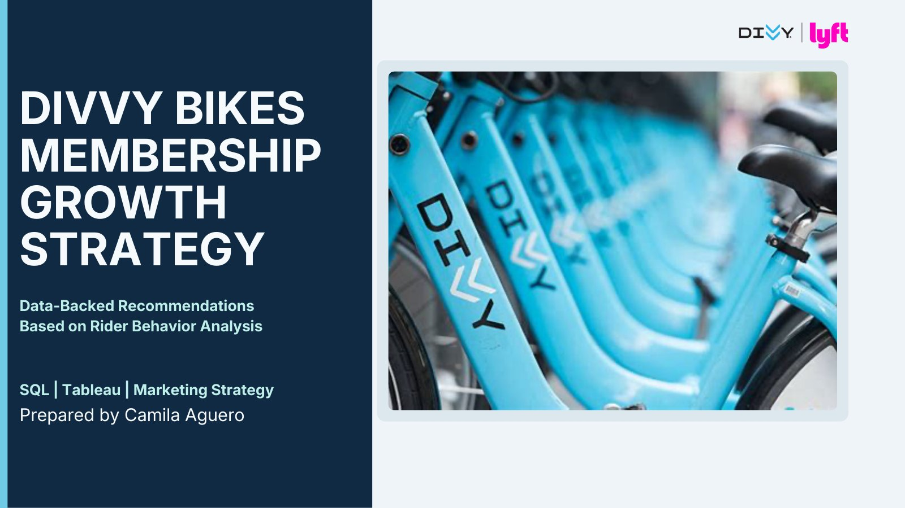
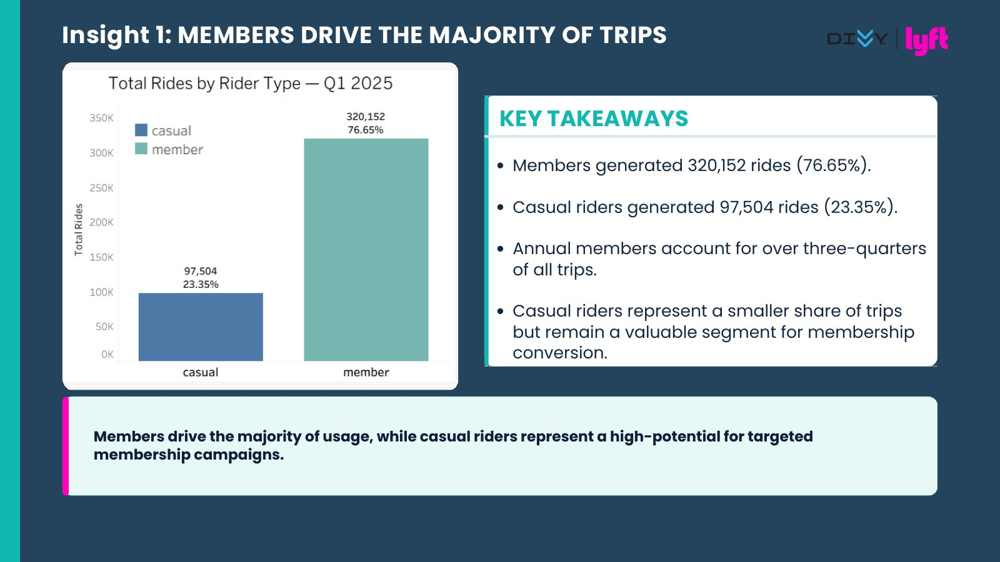
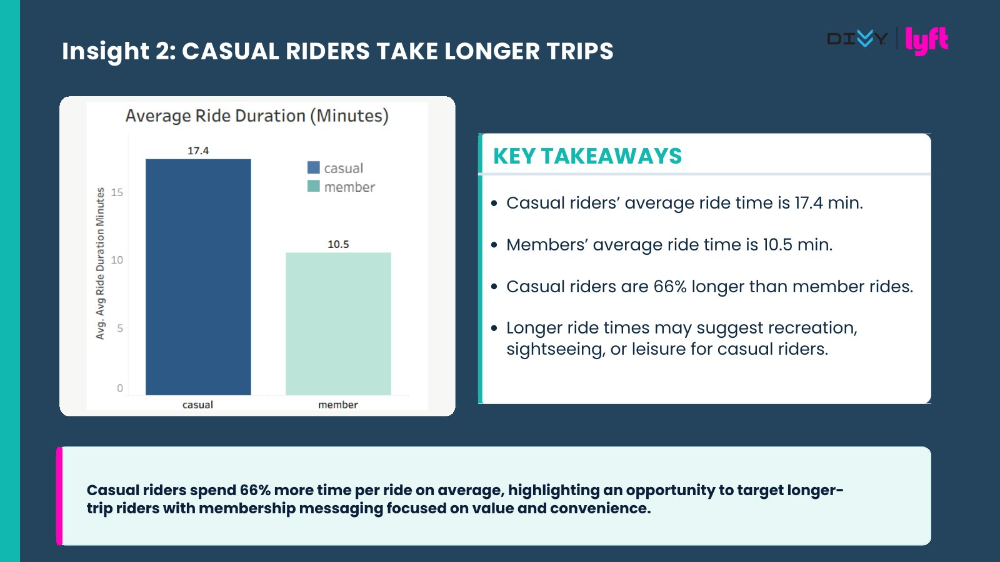
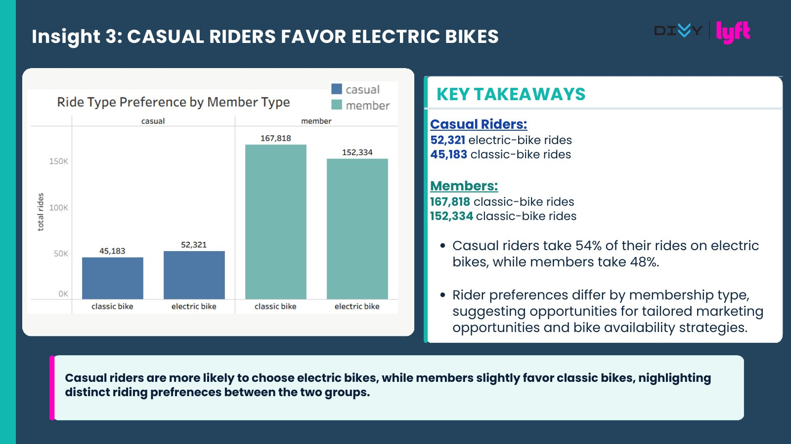
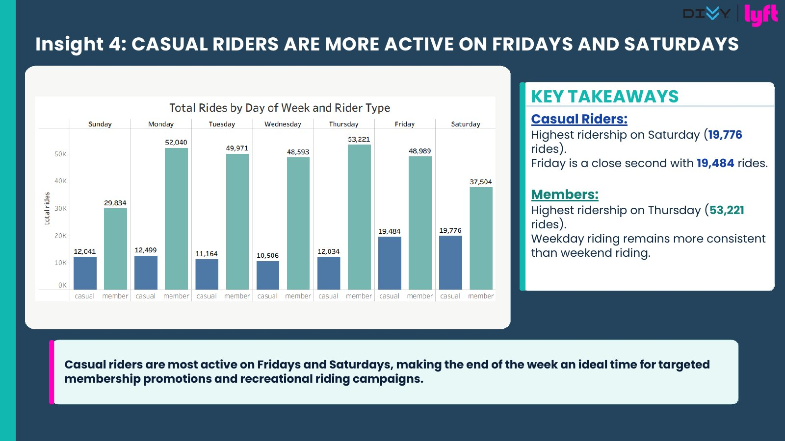
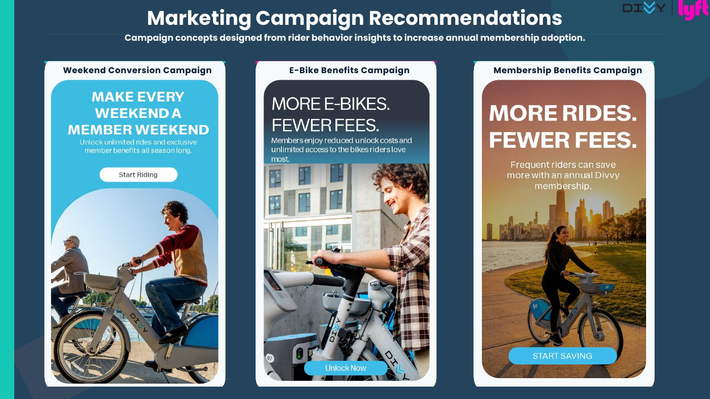

Reach riders on weekends
Target casual riders with Friday and Saturday membership campaigns.
Marketing analytics · Q1 2025
Data-backed recommendations based on rider behavior analysis to grow annual membership adoption.

Divvy wants to understand how casual riders differ from annual members and identify opportunities to increase membership adoption.
By analyzing ride frequency, duration, bike type, and days of activity, this project surfaces practical ways to improve conversion, retention, and recurring revenue.
02 · Executive summary
Annual members drive most trips, while casual rider behavior reveals clear conversion opportunities.
Share of Q1 rides taken by annual members
Longer average rides for casual riders
Casual riders choosing electric bikes
Target casual riders with Friday and Saturday membership campaigns.
Focus on casual riders who already take longer trips and prefer electric bikes.
Higher membership conversion can improve retention and strengthen long-term ridership.
03 · Insight one
Annual members generated 320,152 Q1 rides, representing 76.65% of total ride volume.

04 · Insight two
Average casual rides lasted 17.4 minutes versus 10.5 minutes for annual members.

05 · Insight three
Bike type preference differs by membership type, creating a clear opportunity for tailored marketing.

06 · Insight four
End-of-week activity makes Fridays and Saturdays natural moments for targeted membership campaigns.

07 · From findings to action
Continue targeting highly engaged casual riders with membership offers that reflect their behavior.
Highlight unlimited rides and extended ride experiences for casual riders who spend more time on bikes.
Emphasize reduced unlock costs and unlimited access to the bike type casual riders value most.

08 · Potential business impact
Use behavioral signals to prioritize casual riders most likely to benefit from membership.
Annual memberships support recurring revenue and longer-term business growth.
Consistent riding habits can support stronger long-term engagement.
Project resources
Explore the interactive dashboard, review the SQL workflow, or see the original presentation deck.